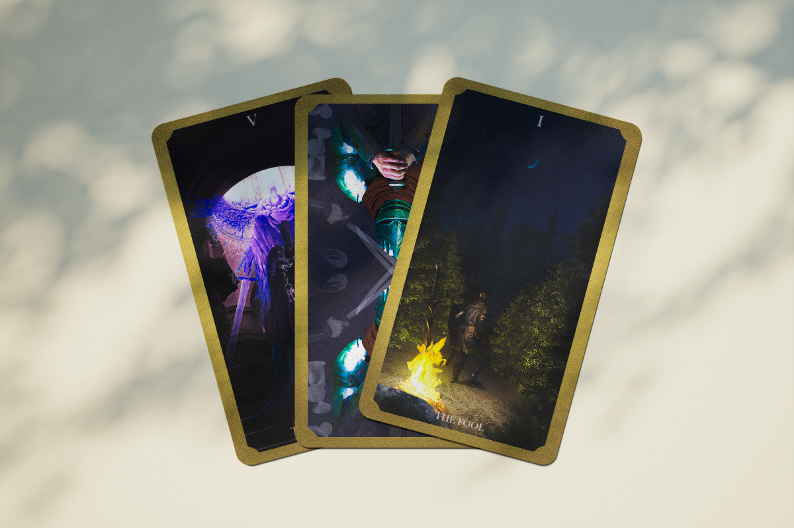
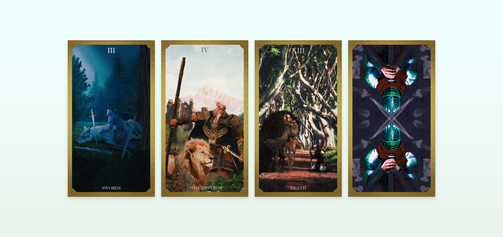
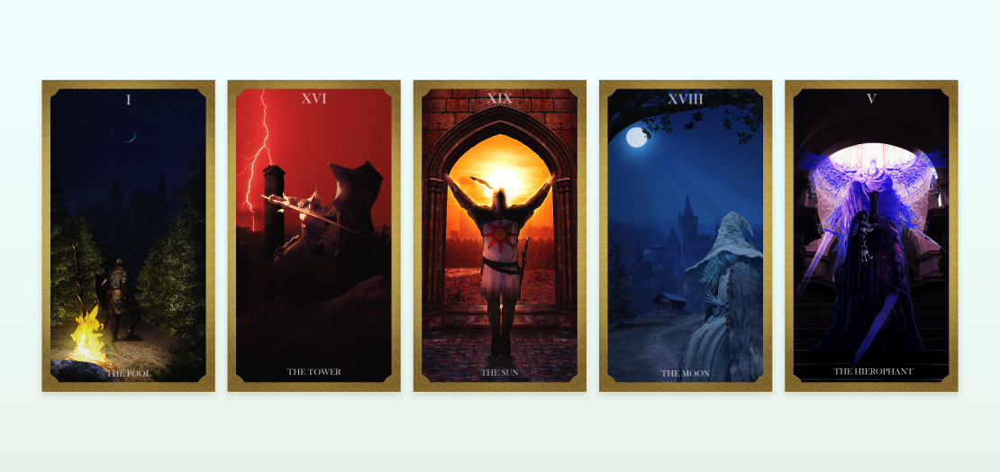

This series of tarot cards builds upon admiration for a collection of games made by the company FROMSOFTWARE. I take a lot of enjoyment out of the photo-editing that can go into poster design, and in this case, card design. I couldn't think of a better topic to focus on than some of my favorite games. I used a variety of photos, some taken and others were royalty free and sourced online. When possible I tried to avoid using pictures from the games themselves and turned to using statues made for the game. When I did have to use photos from the games, I would go in and screenshot them myself using an in game camera mode. After editing all my assets together, I created a set of cards that I still am proud of to this day.

